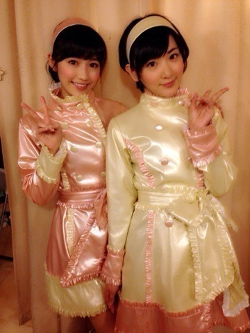

| 2014/04 29 Tue | 初日！ |
昨日になりましたが、
私生駒里奈はAKB48チームBとして劇場デビューしましたっ！！
兼任が決まってから二ヶ月くらい経つのかな？
劇場公演に出るという事で、レッスンやリハに参加して、覚える事、やる事が沢山あって。
徐々に心の何処かに不安が積もってきて。
でも！
チームBの皆とレッスンしていくうちに仲良くなって、分からないことも教えてくれて。
みおちゃんも同じ兼任仲間だし、まーちゅんは移籍して、このチームはいろんな所から集って出来たチームだと思います。
のぎのぎの皆もいっぱい助けてくれた！
スタッフさんにも沢山お世話になりました。
沢山の支えがあって初日を迎えました。
すごく楽しかったです！！
AKBのファンの皆さんに
ようこそっ！
これからよろしくね！
と声をかけて下さいました。
ほっとしました。
反省点とか、いろいろあります。
書きたいこととかいっぱいあってうまく整頓出来ないけど。
でも！
私は沢山学んでいきたいと思います！
だから大丈夫っっ！！
うんっっ！
劇場は特殊な場所でした〜ヽ(・∀・)ノ
でも踊る事楽しいです！
まゆゆさんとユニットでこの曲をやりました！

じゃじゃん！
てもでもの涙

まゆゆさんの表現力に圧倒されました！
私もあんな風になりたいっ！！
あと衣装のスカート丈は短いな〜

ますます燃えてきたぜ！！
プリンシパルも頑張るぞっ！
へばなっ！☆
コメント(832)
2014/04/29 17:06